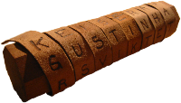
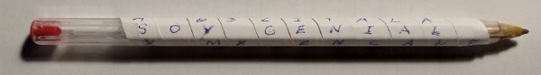

1. Uno de los primeros sistemas criptográficos
La necesidad de proteger la información no ha surgido ahora, si no que viene de antiguo, cuando se necesitaba enviar mensajes sin que el enemigo los pudiera interceptar e interpretar.
Vamos a realizar una actividad en grupos de dos para explorar un antiguo sistema de encriptado.
Es hora de ponernos manos a la obra.
Intenta crear una escítala para enviar mensajes, puedes buscar información y experimentar hasta encontrar una manera adecuada.
¿Qué es una escítala?

Una escítala es un sistema de criptografía utilizado por los espartanos en la antigua Grecia para el envío de mensajes secretos. Está formada por dos varas, ambas de igual grosor y una tira de cuero o papiro. ¿Te resulta familiar?El sistema consistía en que las dos varas del mismo grosor (desconocido por el resto) se entregaban a los participantes de la comunicación. Para enviar un mensaje se enrollaba una cinta de forma espiral a uno de los bastones y se escribía el mensaje longitudinalmente, de forma que en cada vuelta de cinta apareciese una letra de cada vez. Una vez escrito el mensaje, se desenrollaba la cinta y se enviaba al receptor, que sólo tenía que enrollarla a la vara gemela para leer el mensaje original.

Lumen dice Un poco de ayuda
Una forma fácil de construirnos un sistema para encriptar mensajes es la siguiente:
- Necesitamos una hoja de papel y un bolígrafo BIC o lápiz hexagonal no muy gastado.
- Cortamos una tira de papel de unos 5 mm de ancho en el borde largo de la hoja (29,7 cm).
- Con un trocito de cinta adhesiva (celo) la sujetamos un extremo del papel a la punta del bolígrafo ó lápiz.
- Enrollamos el papel en espiral hacia el otro extremo.
- En cada uno de los lados del hexágono tendremos unos 11 espacios para escribir una letra en cada uno.
- Podemos escribir un mensaje de unos 66 caracteres incluyendo los espacios.

- Si ahora desenrollamos el papel y nos quedará un texto ininteligible que podemos pasar a un compañero o compañera para que lo enrolle en un bolígrafo o lápiz igual al tuyo y lo pueda leer.